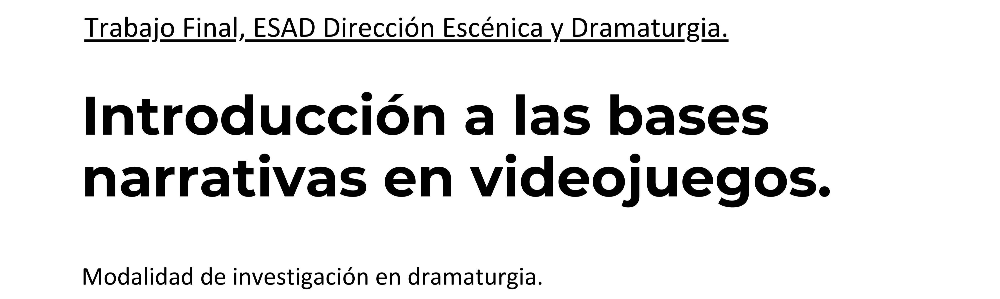
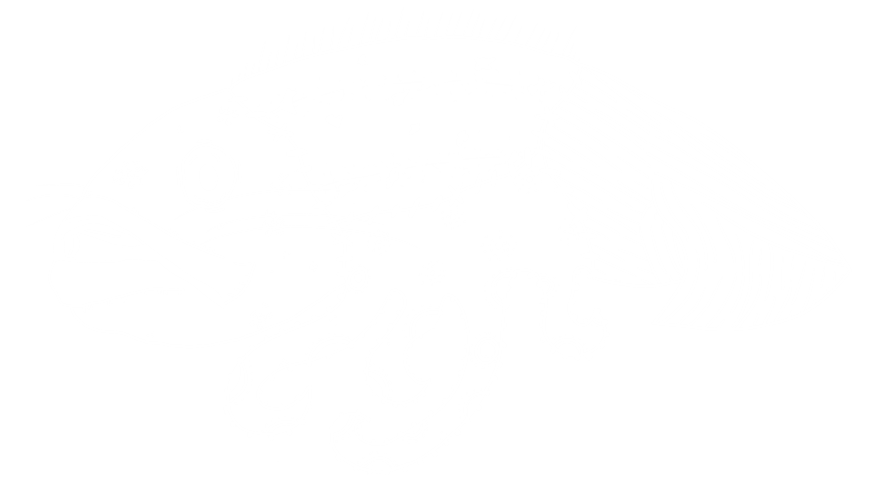
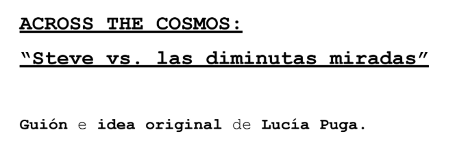
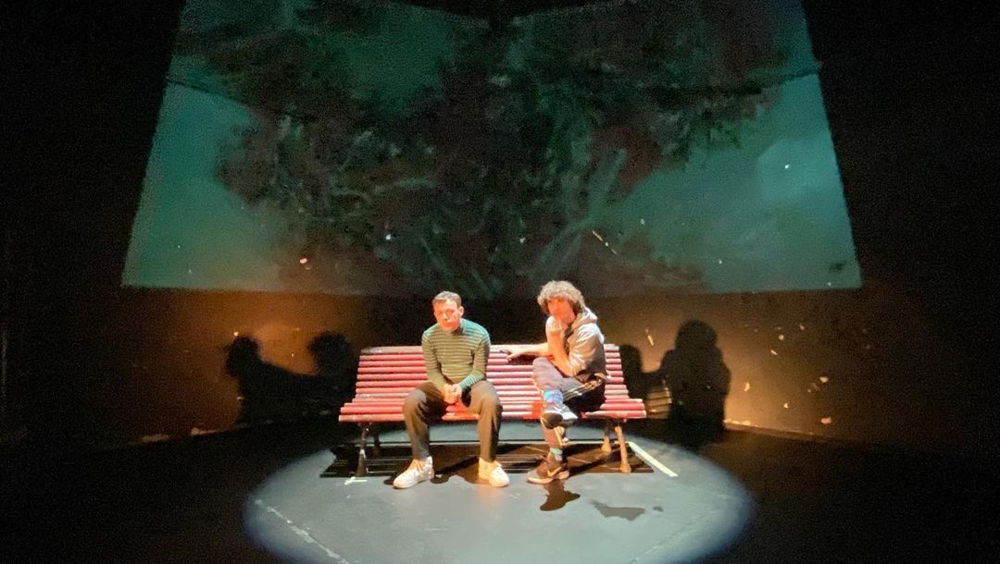
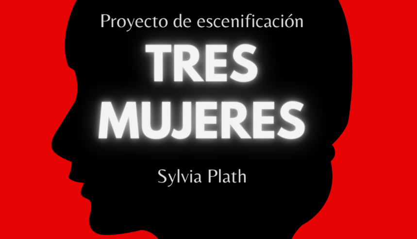

>>> Narrative Portfolio
Stories, scripts and interactive narratives created for
video games, theatre and animation.
Before moving into game development, I studied Dramaturgy and
Theatre Studies. That background continues to shape the way I
approach interactive storytelling, character writing and player
experience.

Introduction to Video Game Narratives
Final Degree Project · 2024 · Grade: 9.5 / 10
My final degree project explores the foundations of
video game narrative, connecting dramaturgy,
interactive storytelling and game design.
The research studies how mechanics, player agency
and narrative structures combine to create
meaningful interactive experiences. It also examines
the MDA Framework as a tool for analysing and
designing narrative-driven games.
As part of the project I collaborated with
Didascalia V.C., an educational VR
initiative developed together with the Complutense
University of Madrid. My role focused on mentoring
the narrative structure of the experience and
exploring how storytelling can support learning.
This project reinforced my interest in narrative
design as a bridge between writing, gameplay and
player experience.
Request full thesis

LEFTOVER · Animated Short
LEFTOVER tells the story of Yago, a shy nine-year-old
boy living in a grey coastal town. His only true companion is
Leftover, a creature assembled from discarded pieces of marine life
and forgotten objects.
Through fantasy, the story explores autism during childhood,
loneliness and the need to find someone who understands you.
Read screenplay

Across the Cosmos · Comedy Miniseries
Steve, an astronaut with exceptionally bad luck, travels across the
universe visiting a different planet in every episode. Every new
world introduces bizarre civilizations, absurd humour and strange
encounters.
The series mixes science fiction, visual comedy and episodic
storytelling inspired by classic animated adventures.
Read pilot script

El Chico Trizas · Theatre Adaptation
A stage adaptation inspired by Sarah Kane's
4.48 Psychosis, reimagined through contemporary urban
realism and based on real experiences surrounding mental health.
The project combines dramaturgy, adaptation and original writing to
create a completely new theatrical proposal.
Read adaptation

Tres Mujeres · Stage Adaptation
A reinterpretation of Sylvia Plath's Three Women,
expanding the original work through scenography, symbolism and
visual storytelling.
The project explores motherhood, identity and feminism while
proposing a new dramatic structure for the stage.
Read project